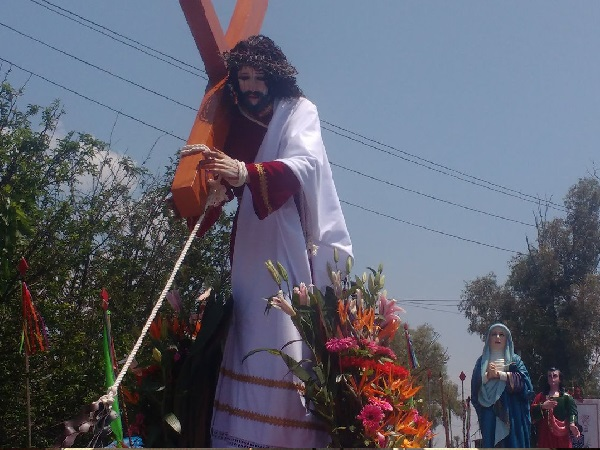
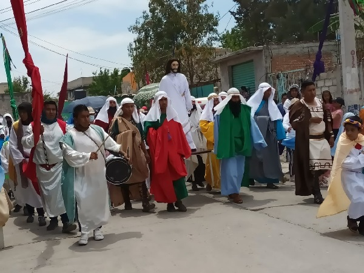

Viernes Santo
El Viernes Santo en realidad se considera un día de luto y penitencia, ya que recordamos la crucifixión de Jesucristo, quien murió en la cruz para salvar a la humanidad.

Jesús elige a sus apóstoles
Jesús escogió a doce apóstoles para dirigir Su Iglesia. Oró toda la noche para escoger a los hombres correctos. A la mañana siguiente, escogió y ordenó a doce hombres, dándoles el sacerdocio y la autoridad para ser apóstoles.
Testimoniales
Porque tanto amó Dios al mundo que dio a su Hijo único, para que todo el que cree en él no se pierda, sino que tenga vida eterna.
- Juan 3:16